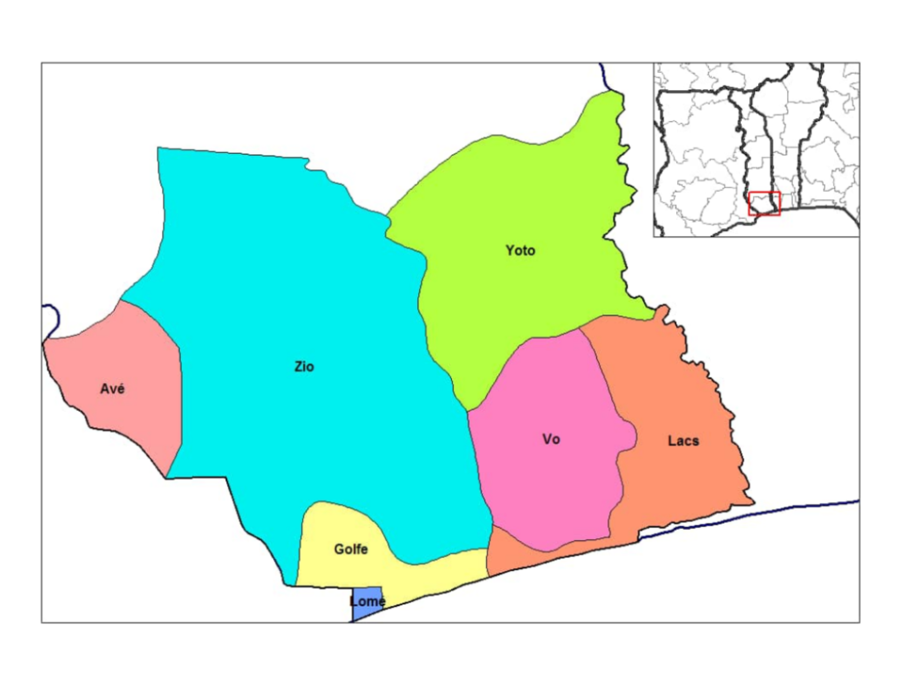
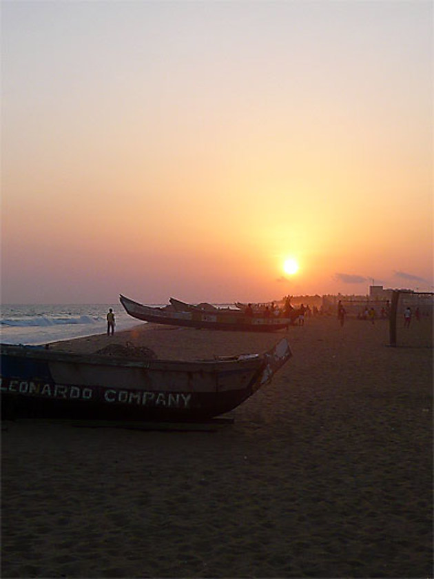
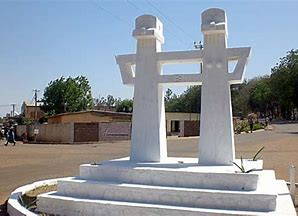

Le Togo est divisé en cinq régions, divisées en 39 préfectures, elles-mêmes subdivisées en 117 communes.
Région maritime - Chef-lieu : Tsévié
Région des plateaux - Chef-lieu : Atakpamé
Région centrale - Chef-lieu : Sokodé
Région de la Kara - Chef-lieu : Kara
Région des savanes - Chef-lieu : Dapaong
Il existe 117 communes au Togo. Dans le sud du pays, les communes des préfectures du Golfe et d'Agoè-Nyivé possèdent une organisation légèrement différentes des autres, avec dans chacune d'elles un gouverneur à la tête des mairies.

Région Maritime
La région maritime s'étend tout le long du littoral bordé de plages de sable fin et de cocotiers.
Lomé est renomée pour ses plages de sables fins, ses promenades ombragées, ses grands marchés quotidiens et ses nombreuses attractions touristiques: musée national, marché aux fétiches, cathédrale allemande du Grand-Marché, monuments architecturaux...

Située au bord de l’océan Atlantique, Lomé abrite des plages majestueuses sublimées par des couchers de soleil renversants. On s’y laisse facilement bercer par le doux murmure du vent qui entraîne palmiers et cocotiers dans une danse sans fin. Capitale du Togo, Lomé compte le français parmi ses langues locales, et vous dévoilera l’Afrique de l’Ouest dans toute sa splendeur. L'expérience peut être un véritable dépaysement pour la plupart des visiteurs. Il n'est pas superflu de se rapprocher de l'Office du Tourisme du Togo pour profiter d'un séjour sans les moindres imprévus.
Découvrez ci-dessous une liste des plus belles plages de Lomé, à explorer dès votre arrivée et de préférence tôt le matin ou en milieu d’après-midi, en raison des températures élevées observées entre midi et quatorze heures.
La plage de Lomé
La plage de Lomé est la plage principale de la capitale togolaise. S’agissant d’un site naturel public, elle est sans aucun doute l’attraction la plus connue de la ville. La baignade y est envisageable, à condition de ne pas s’aventurer trop loin. En effet, il ne faut pas oublier que les courants de l’océan Atlantique ont une certaine intensité dans la région ouest-africaine. De temps à autre, en fin de semaine, il arrive que les habitants viennent se détendre sur cette plage dans la bonne humeur en jouant de la musique et en dansant sur des jolis tempos rythmés.
Depuis la capitale, le littoral est bordé jusqu'au Bénin par une splendide route qui traverse des cocoteraies et des villages typiques de pêcheurs.
Les plus belles plages aménagées du pays se situent dans les environs de Baguida et Avepozo.
Le contour de la côte sableuse en bordure de la plaine côtière et une plantation de noix de coco où se trouve Lomé, la ville qui rappelle «Conventions», qui porte son nom et fait l'objet d'échanges préférentiels entre la Communauté Economique Européenne «CEE» et les pays d'Afrique, des Caraïbes et du Pacifique.
Lomé présente un marché très attractif avec leurs grands hôtels de luxe, des rues ombragées, des plages animées et l'hospitalité de ses habitants.
Le lac Togo (Français: lac Togo) est la plus grande partie d’un lagon au Togo,séparé de l’océan Atlantique par une étroite bande côtière. Il est peu profond et un endroit populaire pour les sports nautiques. Les villes sur la rive du lac comprennent Agbodrafo et Togoville. Le transport sur le lac se fait généralement par pirogue.Sur les rives sud du lac Togo, qui fait partie de la lagune intérieure qui s’étend de Lomé à Aného, Agbodrafo est une escapade de week-end populaire pour les résidents de Lomé en effervescence. Nager dans le lac - qui est croc et sans insectes - est un bonheur. C’est aussi un bon endroit pour trouver une pirogue (canoë traditionnel) à Togoville,qui était l’ancien siège de la dynastie Mlapa et le centre historique du vaudou du Togo.
A une trentaine de kilomètres à l'Est de Lomé, le lac Togo offre aux amoureux des sports nautiques et de la nature des occasions de loisir et de divertissement considérables.
Le fleuve Mono offre aux visiteurs une traversée en pirogue étranges: une découverte très fascinant des crocodiles, des hippopotames de temps en temps, et des nuées d'oiseaux de différentes espèces.
Les pêcheurs naviguent dans de petits canots creusés dans des troncs d'arbre pour aller ramasser leurs filets et leurs nasses.Le lac Togo est d’environ 15 km (9,3 mi) de long, 6 km (3,7 mi) de large et 64 km² de superficie. Il reçoit l’eau de la rivière Sio au sud-ouest et de divers autres ruisseaux plus petits à l’ouest et à l’est et la rivière Haho entre par le nord. Le lac est séparé de la mer par un banc de sable d’environ un kilomètre de large. L’eau sort vers l’est par une extension semblable à un canal où elle reçoit l’eau du petit lac Voganvoisin, et continue dans le système lagunaire le long de la côte.
Une route principale traverse la côte au sud du lac et les routes locales entourent le lac, reliant les petits villages. La région n’est pas très peuplée et il y a peu de tourisme. L’économie dépend de l’agriculture extensive et de la pêche, avec l’utilisation de sennes et la vente de poissons dans les villes locales. Les noix de coco sont cultivées entre le lac et la côte, et il y a des plantations de noix de coco et de palmiers à huile sur les plaines inondables au nord du lac.
A Agbodrafo, vous aurez l'occasion de découvrir également toute la richesse du patrimoine culturel de la région avec les vestiges de la côte des esclaves tels que la "Maison des esclaves ou maison WOOD" ou le puit des enchaînés.
Aneho, située à 15 km à l'Est d'Agbodrafo, est le centre spirituel et culturel du peuple Guin.
La ville est bâtie près d'une lagune sinueuse, entourée de villages de pêcheurs et de plantations de cocotiers. Aného conserve l'âme d'une ville coloniale du 19ème siècle.La maison "Wood Home", réservée aux esclaves sera bientôt rebaptisée "Maison des esclaves", a appris mercredi à Lomé Republicoftogo.com.
"Wood Home deviendra +Maison des Esclaves+ à l'instar de ce qui se passe dans plusieurs pays d'Afrique, notamment au Bénin et au Ghana" , a indiqué un responsable du ministre de la Culture."C'est sur ce lieu que se dérouler prochainement le nouveau festival dénommé la Veillée du grand départ, prévu chaque 10 mai", a-t-il souligné.
Wood Home est un monument esclavagiste par excellence et un témoin de cette tragédie humaine qui se déroula sur les côtes du Togo entre le dernier quart du XVIIè siècle et la fin du XIXè siècle.
Wood Home est situé dans le quartier Lakomé en plein centre d'Agbodrafo dans la préfecture des Lacs à 35 km de Lomé.
C'est un bâtiment de 21,6m de long et de 9,95m de large composé de six chambres, d'un salon, des couloirs de 1,5m de large et une cave de 1,5m de hauteur sur tout le pourtour de l'édifice.
De nombreux esclaves transitaient par la cave de Wood Home et Gatovoudo, un puits dénommé "puits des enchaînés". Ils prenaient leur ultime bain de "purification" dans ce puit avant leur embarquement vers les Amériques.

Située à 15 kilomètres à l'est d'Agbodrafo, Aného est le centre spirituel du peuple Guin-Mina.
La ville est bâtie près d'une lagune sinueuse et est entourée de villages de pêcheurs et de plantations de cocotiers.
Jadis centre de la traite des Noirs, Aného fut le premier centre de l'administration allemande. Plus tard, elle devint la première capitale du territoire.
De nos jours, Aného conserve l'âme d'une petite ville coloniale du 19ème Siècle. C'est une cité paisible de pêcheurs et d'agriculteurs, un centre agricole réputé pour sa production de manioc, une culture vivrière importante.
A Aného, on peut observer le fonctionnement des coopératives de pêche, ces grands groupes de familles de pêcheurs qui se partagent les prises.Aného, anciennement connue sous le nom d’Anecho est une ville du sud-est du Togo,située sur le golfe de Guinée près de la frontière du Bénin. Fondée à la fin du 17ème siècle par des peuples Ane fuyant les attaques d’Asante à Elmina (aujourd’hui au Ghana), Aného s’est développée comme un port négrier et un centre commercial. Elle fut la capitale du Togoland allemand de 1885 à 1887 et de l’occupation Français de 1914 à 1920. Aného reste un centre intellectuel important pour le Togo, bien qu’il ne se soit pas développé aussi rapidement que les autres grandes villes du Togo. Sa population était estimée à 25 400 habitants en 2005.
Il est situé à 45 km à l’est de la capitale Lomé,entre l’océan Atlantique et le lac Togo dans la région maritime. Historiquement, il était connu sous le nom de Little Popo et il y avait un marché aux esclaves portugais. La ville voisine de Zebe est devenue la deuxième capitale du Togoland allemand en 1887. [1] Son importance a progressivement diminué après le transfert de la capitale à Lomé en 1897, déclin exacerbé par l’érosion côtière.
Les principales industries de la ville sont l’agriculture et la pêche,alors qu’elle est toujours un centre pour le vaudou. Les bâtiments remarquables comprennent l’église protestante Aneho (construite en 1895) et l’église Aneho Pierre et Paul,cathédrale du diocèse catholique romain d’Aného,datant de 1898. Ensemble, ces bâtiments ont été ajoutés à la Liste indicative de l’UNESCO le 12 décembre 2000, dans la catégorie Culturelle.
Lomé , ville, capitale du Togo. Lomé se trouve sur le golfe de Guinée (côte atlantique) à l’extrême sud-ouest du pays. Choisie comme capitale coloniale du Togoland allemand en 1897, elle est devenue importante en tant que centre administratif, commercial et de transport. Une ville moderne a été aménagée et une jetée de 1 380 pieds (420 mètres) a été construite pour faciliter l’exportation de matières premières. Trois chemins de fer s’étendent de Lomé à l’arrière-pays: au nord-ouest à Palimé,au nord à Sokodé,et à l’est le long de la côte jusqu’à Aného. La modernisation du port a commencé dans les années 1960, et un port en eau profonde, achevé en 1968, peut traiter environ trois millions de tonnes de marchandises par an. Cela a grandement facilité l’expédition des phosphates et d’autres exportations majeures, telles que le cacao, le café, le coprah,le cotonet les produits du palmier. Lomé abrite également un aéroport international, une centrale thermique et la Maison du Peuple, une salle de conférence.
Région des Plateaux
LA RÉGION DES PLATEAUX OUEST EST RÉPUTÉE POUR SON ENVIRONNEMENT NATUREL EXCEPTIONNEL CARACTÉRISÉ PAR L'EXUBÉRANCE DE SES FORÊTS, VÉRITABLES MUSÉES VÉGÉTAUX D'ESSENCES TROPICALES.
Cascade de Kpalimé au Togo
C'est l'endroit rêvé pour les amateurs de randonnées et de tourisme vert.
Kpalimé est également un des plus grand centre artistique et artisanal du pays.
Depuis Kpalimé, les visiteurs pourront découvrir toutes les richesses de la faune et de la flore tropicale ainsi que les nombreuses cascades naturelles de la région dont celle d'Aklowa (Badou), l'une des plus importantes du Togo.
La région est également riche en artisanat, Kpalimé est le principal centre artistique et artisanal du pays
La ville prospère d'Atakpamé qui se trouve sur une colline complète le "triangle du café-cacao" formé par Kpalimé, Badou et Atakpamé.
Autrefois, Atakpamé était un refuge montagneux. Plus tard, au cours de la colonisation allemande, la ville devint un centre agricole et administratif.
Avec un peu de chance, on peut assister à un spectacle de danse tchébé sur échasses. C'est une des danses les plus célèbres du Togo et une des spécialités de la région
De nos jours, Atakpamé reste un centre agricole majeur.
C'est également un centre de production; l'on y trouve une usine textile importante.
La ville est construite en haut d'une colline qui surplombe la plaine avoisinante.
Le climat y est frais et agréable.
Le marché central est situé autour de la place principale de la ville. La nuit tombée, la place devient plus animée et les acheteurs comme les visiteurs marchent au pas de la musique.
Le plus haut sommet du Togo, le Mont Agou, se trouve entre Amoussoukopé et Kpalimé. Cette montagne de 986 mètres (3.000 pieds) est couverte de forêts denses parsemées de petits villages.
Des sentiers sillonnent le flanc de la montagne et les montagnards énergiques grimpent jusqu’au sommet. Pourtant, il n’est pas nécessaire de marcher, car une bonne route serpente jusqu’au sommet.
Pour se rendre au sommet du mont Agou qui est l’une des formations rocheuses de l’Atakora, il faudra passer par une route sinueuse et tortueuse qui finalement débouche sur un paysage splendide.
Village sur le Mont Agou - Togo
Village sur le Mont Agou - Togo
Juché au sommet du mont, on retrouve une vue imprenable sur toute la préfecture d’Agou et ses alentours. Les colons allemands, puis français ont marqué par une borne, l’emplacement du point culminant.
Une fois arrivé au sommet et quelque soit la manière utilisée, la récompense est la même : le panorama spectaculaire des vallées et des plaines en contrebas…
Le Pic d’Agou est le mont le plus élevé du Togo avec 986 m d’altitude. Pour atteindre le sommet, il faut effectuer une randonnée à pied ou aller à voiture mais vu l’état des routes, la randonnée est plus recommandée et elle permet de savourer la beauté du paysage et du microclimat qui y règne.
Région Centrale
La région centrale couvre une superficie d'environ 13 500 km2 dont plus de 20% sont des réserves et des forêts classées parmi lesquelles la réserve du parc national du Fazao qui couvre près de 2 000 km2.
La ville de Sokodé (à majorité musulmane) est la deuxième ville du pays en nombre d'habitants.
La région centrale est au coeur de la culture des traditions TEM (chefferies traditionelles, danse du feu et du couteau).
Sokodé Danse au feu - Nord Togo
La région offre de nombreux atouts culturels, les traditions sont restées vivantes. Le folklore, vivifié par le côtoiement incessant des différentes ethnies, avec interpénétration des coutumes, est ici particulièrement actuel et authentique.
Les fêtes du Ramadan, de la Tabaski, de Gadoa et d'Adossa (que l'on appelle aussi la fête des couteaux ), toutes d'origines musulmanes et dont la pratique a été propagée par les Kotokoli , sont célébrées en grande pompe.
Sokodé est la deuxième plus grande ville du Togo et siège de la région Tchaoudjo et Centrale dans le centre du pays, à 339 kilomètres (211 mi) au nord de Lomé. Avec une population de 86 500 habitants (2004), actuellement d’environ 189 000habitants[1], la ville est située entre les rivières Mo et Mono, et c’est un centre commercial pour les zones agricoles environnantes. C’est une ville multiethnique et multireligiente, mais elle est dominée par l’islam. C’est un centre administratif où vivent la majorité des Kotokolis, des musulmans dont les tissus rappellent l’Afrique du Nord.Ensuite, les hommes portent de gros boubous et les femmes le voile au-dessus de belles tenues colorées.Sokodé est l'une des plus grandes villes du Togo.
C'est un centre administratif où vivent en majorité les Kotokolis, musulmans dont les vêtements rappellent l'Afrique du Nord.
Les hommes portent de grands boubous et les femmes le voile au dessus de magnifiques tenues très colorées.
La vie est organisée autour des chefferies traditionnelles qui font encore aujourd'hui autorité sur les TEM.
La musique et les danses locales ne se rencontrent nulle part ailleurs au Togo. Lors du festival du couteau, les rues se remplissent de musique et de danses traditionnelles.
La région est également riche en artisanat, le tissage est l'une des principales activités.
Enfin la région regorge de marchés hauts en couleurs tels que celui de Tchamba ou de Sokodé.
La réserve de Fazao-Malfakassa propose une très belle bio-diversité.
Région de la Kara
La région de la Kara offre un intérêt touristique incontestable:
Tata Tamberma - Pays des Batammariba - Nord Togo
Des sites splendides dont le paysage koutammakou, classé au patrimoine mondial par l'UNESCO, des populations authentiques, des paysages diversifiés (Monts Kabyés, falaises de Défalé) et un folklore remarquablement riche chez des populations qui ont su conserver intactes et vivantes leurs traditions.
Le paysage koutammakou et ses maisons/fortifications dénommées « takienta » sont parmi les plus beaux sites touristiques que propose le Togo.
Le site est inscrit au patrimoine mondial de l'UNESCO sous le nom de KOUTAMMAKOU, pays des Batammariba.
Luttes Evala à Kara - Nord du Togo
Les nombreuses fêtes et danses traditionnelles de la région (luttes evala, akpema, habyé,..) sont autant de témoignages vivants de l'attachement des populations de la région aux traditions et modes de vie ancestraux.
La célèbre faille d’Aledjo où la falaise semble à cet endroit cisaillée par un coup d’épée. La voie a en réalité été ouverte à l’époque par les Allemands. C’était un passage très délicat pour beaucoup de poids lourds qui rejoignent les pays sahéliens (Burkina Faso, Mali, Niger) souvent (toujours) surchargés. Aujourd'hui grâce à la nouvelle nationale 1 toute neuve, véritable autoroute entre Sokodé et Kara, la nouvelle déviation est plus aisée et plus rapide pour tous. Depuis, la faille d'Aledjo a été interdite aux camions. Elle est devenue une route touristique très belle et non surchargée avec de beaux panoramas sur les montagnes et de belles traversées de villages.
Région des Savanes
Une région curieusement entrecoupée de monts verdoyants riches en damans de rochers: c'est le domaine par excellence du rônier, de la culture attelée et de l'élevage bovin.
La région regorge de sites historiques semblant dater de temps imémoriaux rapellant que l'Afrique fut aussi un des berceaux de l'humanité.
Grottes et greniers de Nano et Maproug Dapaong - Nord Togo
La région est riche en trésors historiques et culturels tels que les peintures rupestres de Namoudjoga ou les grottes et greniers de Nano et Maproug.
Ces sites ont été proposés au patrimoine mondial de l'UNESCO.
Cette région est essentiellement peuplée de Moba-Gurma , les plus nombreux, et de Tchokossi.
Les Moba sont essentiellement des cultivateurs et des chasseurs, on les retrouve surtout dans la région de Dapaong.
Les Tchokossi (originaires de la Côte d'Ivoire) se sont installés dans la région de Mango à la faveur des guerres. Peuple animiste ou musulman, ils sont à l'origine de l'implantation de l'islam dans cette partie du Togo.

La ville de Dapaong est nichée au creux des collines.
C'est un endroit idéal pour aller à la rencontre du pays Moba ou découvrir les nombreux sites historiques.
Les grottes et greniers de Nano et Maproug flanquées au creux de la falaise et les peintures rupestres de Namoudjoga sont parmi les attraits touristiques majeurs de la région.
Dapaong est une ville du nord du Togo et le siège de la préfecture de Tône dans la région des Savanes, dont elle est également la capitale. Sa population s’élevait à 58 071 habitants lors du recensement de 2010. Elle est située à 638 km au nord de la capitale Lomé, près de la frontière avec le Burkina Faso. C’est un bourg et dispose d’un petit musée.
Venez au TOGO pour découvrir plus de merveilles...